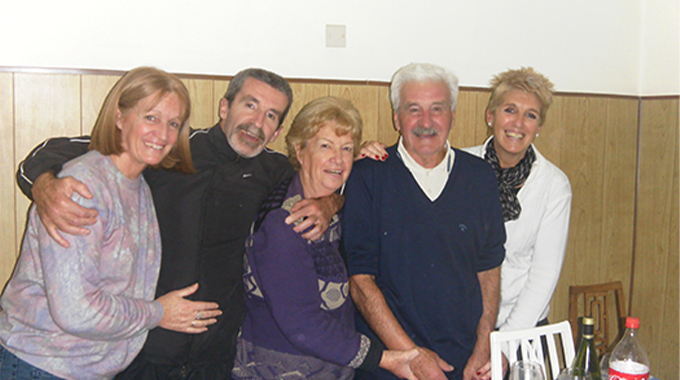

Hola! Somos Dolores y Domingo, los creadores de Gralito.
Todo comenzó en el año 1973 con una pequeña mercería de barrio la cual lleva el nombre debido
a nuestros tres hijos GRAciela, ALIcia y AlberTO.
Comenzamos con pocos productos de mercería, luego sumamos librería y
ropa de dama y caballero. Hoy en día Dolores sigue presente en la Mercería con
la ayuda de sus hijos y nietos.